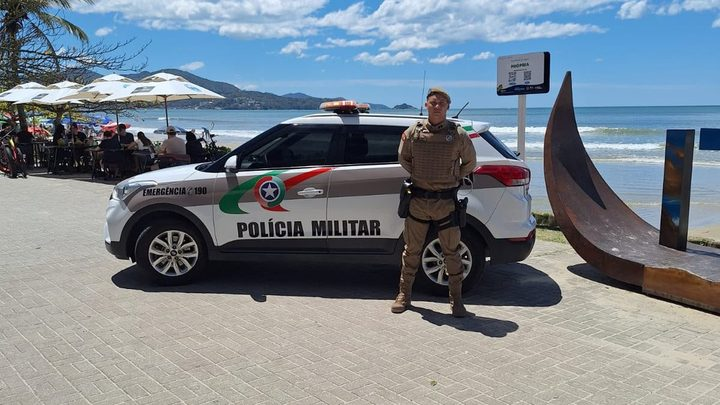
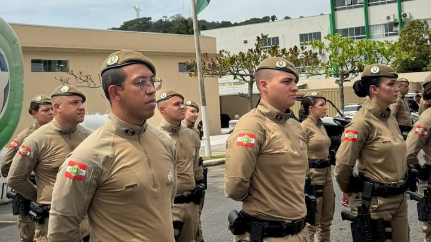
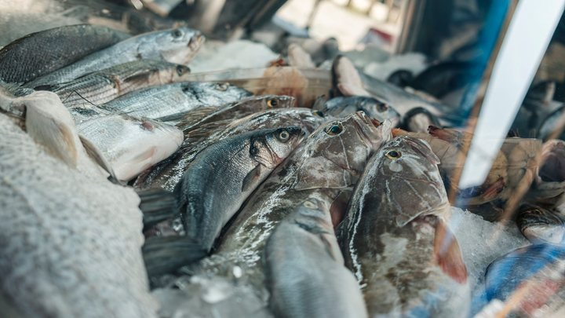

Itapema · SegurançaOs policiais temporários começaram a patrulhar Itapema cinco dias depois da formatura, e a lei que criou o posto proíbe que eles usem viatura ou moto
O que esses mesmos policiais podem e não podem fazer.
A nota da Prefeitura de Itapema de 9 de outubro diz, no corpo do texto, que os dez policiais temporários vão para o 31º Batalhão, e não para a cidade. O batalhão tem sede em Itapema e atende oito municípios, que somam 279.268 moradores na estimativa do IBGE para 2026. A soma é conta nossa. Nesta segunda-feira, a Prefeitura de Tijucas publicou sete policiais novos para a região: quatro para Tijucas, dois para São João Batista e um para Nova Trento. Nenhuma das duas notas diz se esses sete estão dentro daqueles dez.
Em 30 segundos · Modo de Leitura, formato original Santa Informa
Em 9 de outubro a Prefeitura de Itapema anunciou dez policiais temporários.
O título da nota falava em reforço para a cidade.
O corpo do texto diz outra coisa.
Diz que os dez vão para o 31º Batalhão de Polícia Militar.
O batalhão tem sede em Itapema.
Mas ele atende oito municípios, não só Itapema.
São Itapema, Porto Belo, Bombinhas e Tijucas.
Mais Canelinha, São João Batista, Nova Trento e Major Gercino.
Juntos eles têm 279.268 moradores.
Essa soma é conta nossa, sobre a estimativa do IBGE de 2026.
Nesta segunda-feira, 19 de outubro, Tijucas publicou a sua nota.
Ela fala em sete policiais novos para a região.
Quatro para Tijucas, dois para São João Batista, um para Nova Trento.
As três cidades ficam na área do mesmo batalhão.
Nenhuma das duas notas diz se os sete são parte dos dez.
Se forem, sobram três para as outras cinco cidades.
Entre essas cinco está a própria Itapema.
Se forem turmas diferentes, o batalhão recebeu pelo menos 17.
Com o que está publicado, não dá para saber qual das duas.
Porto Belo e Bombinhas não publicaram número nenhum.
Canelinha e Major Gercino também não.
Procuramos o site da Polícia Militar para conferir.
Ele respondeu erro 503 nas nossas tentativas.
Poder PúblicoPublicada em Redação Santa Informa
![Ilustração com o rótulo 31º Batalhão de Polícia Militar, sede em Itapema. No alto, uma faixa azul-clara traz o número 10, policiais temporários destinados ao batalhão, e à direita 279.268 moradores nos 8 municípios. Abaixo, oito caixas, uma por cidade, com a população de cada uma. As caixas de Tijucas, São João Batista e Nova Trento têm borda azul e trazem 4, 2 e 1 policiais anunciados. As de Itapema, Porto Belo, Bombinhas, Canelinha e Major Gercino estão em cinza e trazem a frase sem número publicado.](imagens/webp/ilustracao-m309.webp)
Em 9 de outubro a Prefeitura de Itapema anunciou dez policiais militares temporários. A chamada da nota dizia que a cidade contaria com o reforço. O corpo do texto diz uma coisa diferente, e é essa a frase que importa: “Os dez policiais serão destinados ao 31º Batalhão de Polícia Militar, responsável pelo atendimento em Itapema”. O destino é o batalhão, e o batalhão atende oito municípios, não só Itapema. Nesta segunda-feira, 19 de outubro, a Prefeitura de Tijucas publicou que sete policiais novos vão para a região: quatro para Tijucas, dois para São João Batista e um para Nova Trento. As três cidades ficam dentro da área desse mesmo batalhão.
O 31º Batalhão foi ativado em 3 de junho de 2022, pela Portaria 240 do Comando-Geral da Polícia Militar, e tem sede em Itapema. A área dele reúne Itapema, Porto Belo, Bombinhas, Tijucas, Canelinha, São João Batista, Nova Trento e Major Gercino. Somamos a estimativa do IBGE de 2026 para cada uma e deu 279.268 moradores. A conta é nossa. Em junho de 2025, a Prefeitura de Canelinha descrevia a mesma área como “população estimada em 250 mil pessoas”.
O número de Tijucas é o primeiro por município que apareceu nesta leva. Mas nenhuma das duas notas diz se os sete de Tijucas estão dentro dos dez de Itapema. A nota de Tijucas não cita batalhão, não informa se os policiais são temporários e não menciona Itapema, Porto Belo nem Bombinhas. A nota de Itapema não cita nenhuma outra cidade. Se os sete forem parte dos dez, sobram três para as outras cinco cidades, Itapema incluída. Se forem turmas diferentes, o batalhão recebeu pelo menos 17. Com o que está publicado, não dá para escolher entre as duas leituras.
Das oito cidades, três têm número próprio: Tijucas, São João Batista e Nova Trento. Itapema tem um número que é do batalhão, não da cidade. E Porto Belo, Bombinhas, Canelinha e Major Gercino não têm número nenhum publicado. Itapema é a maior das oito, com 88.842 moradores, quase um terço do total da área. Para quem mora aqui, a diferença é concreta: dez policiais numa cidade de 88 mil é uma coisa, dez espalhados por 279 mil moradores é outra bem diferente.
O resumo de 30 segundos está no topo e a versão completa é o texto acima. Aqui ficam as três leituras da casa sobre o mesmo assunto.
Clara, a otimista
Tijucas fez uma coisa simples e muito boa: disse o número por cidade. Quatro aqui, dois ali, um acolá. Quem lê sabe o que esperar da própria rua. É o tipo de detalhe que custa uma linha a mais na nota e resolve a dúvida de todo mundo.
E o melhor é que isso cria um caminho. Agora existe um exemplo publicado, de uma prefeitura vizinha, de como dar a informação. Porto Belo, Bombinhas e a própria Itapema podem fazer igual amanhã, sem precisar inventar nada. Reforço chegando antes da temporada e com número na mesa é uma combinação boa.
Seu Prudêncio, o criterioso
Merece atenção a diferença entre a chamada e o corpo da nota. A chamada diz que Itapema contará com dez. O corpo diz que os dez vão para o 31º Batalhão, que atende oito municípios. As duas frases estão no mesmo texto e não querem dizer a mesma coisa. Quem lê só o título fica com uma expectativa que o próprio documento não sustenta.
Vale acompanhar também o tamanho da área. São 279.268 moradores em oito cidades, pela nossa soma do IBGE, e a área cresceu bastante desde os 250 mil que a Prefeitura de Canelinha citava no ano passado. Dez policiais nesse conjunto é uma proporção, dez em Itapema sozinha é outra. Uma sugestão útil seria o batalhão publicar a distribuição por município, como Tijucas fez. Custa pouco e evita que cada prefeitura conte a mesma leva de um jeito.
Dito isso, é justo reconhecer o que já está funcionando. As duas prefeituras vieram a público, dentro do mesmo mês, contar que o reforço chegou, e a de Tijucas detalhou cidade por cidade. Efetivo policial demora anos para entrar por concurso, e esse caminho entregou gente na rua em quatro meses de curso. O reforço é real, e o pedido aqui é só de clareza sobre onde ele está.
Caco, o sarcástico
Descobrimos que os dez policiais de Itapema são dez policiais de Itapema, Porto Belo, Bombinhas, Tijucas, Canelinha, São João Batista, Nova Trento e Major Gercino. É o mesmo dez, só que com oito vezes mais endereço para visitar.
Reclamação registrada: a conta não fecha. Itapema anunciou dez, Tijucas anunciou sete, e ninguém diz se é o mesmo pessoal. Pode ser dez. Pode ser dezessete. A matemática da segurança pública agora tem duas respostas e a gente escolhe a que dormir melhor.
Mas tá bom porque Tijucas resolveu dizer quantos vão para cada cidade, e isso é mais do que a gente tinha ontem. Chama-se progresso: alguém escreveu um número inteiro num comunicado oficial e o mundo não acabou.
Fontes: A frase “Os dez policiais serão destinados ao 31º Batalhão de Polícia Militar, responsável pelo atendimento em Itapema”, a chamada que fala em reforço para a cidade, os 78 formados na solenidade do 12º Batalhão em Balneário Camboriú e o total de 948 soldados estão em Itapema recebe reforço de dez novos policiais militares, nota da Prefeitura de Itapema de 9 de outubro de 2026, aberta e lida por nós em 19 de outubro. A distribuição de sete policiais, sendo quatro para Tijucas, dois para São João Batista e um para Nova Trento, está em Tijucas recebe reforço de quatro policiais militares para ampliar a segurança na região, nota da Prefeitura de Tijucas, aberta e lida por nós em 19 de outubro de 2026. A lista dos oito municípios do 31º Batalhão, a ativação em 3 de junho de 2022 pela Portaria 240 do Comando-Geral e a descrição de “população estimada em 250 mil pessoas” estão em Solenidade celebra 3º aniversário do 31º Batalhão da PM em Itapema, nota da Prefeitura de Canelinha de 16 de junho de 2025, aberta e lida por nós em 19 de outubro de 2026. A formatura de 948 soldados temporários em 9 de outubro, o curso iniciado em 22 de junho com 16 semanas e 555 horas-aula estão em PMSC forma 948 novos soldados temporários em Santa Catarina, da Secretaria de Estado da Segurança Pública, aberta e lida por nós em 19 de outubro de 2026. A população de cada um dos oito municípios é a estimativa de 2026 da tabela 6579 do IBGE, consultada por nós pela interface de dados do instituto em 19 de outubro de 2026; a soma de 279.268 moradores, a participação de Itapema no total e as duas leituras possíveis da conta entre os sete e os dez são contas nossas. O histórico desses policiais e a leitura da Lei Complementar 880 estão em Os policiais temporários começaram a patrulhar Itapema cinco dias depois da formatura e em Itapema fica com 10 dos 948 novos soldados temporários da Polícia Militar, nossas matérias de 19 e de 9 de outubro de 2026. Tentamos abrir a página do 31º Batalhão e a lista de notícias no portal da Polícia Militar de Santa Catarina em 19 de outubro, e o servidor devolveu erro 503 em todas as tentativas. Não falamos com o 31º Batalhão para esta matéria.

Itapema · SegurançaO que esses mesmos policiais podem e não podem fazer.

Itapema · SegurançaO anúncio de 9 de outubro, com a frase que mudou a conta.

Região · ServiçoOutra conta regional que Itapema divide com as cidades vizinhas.